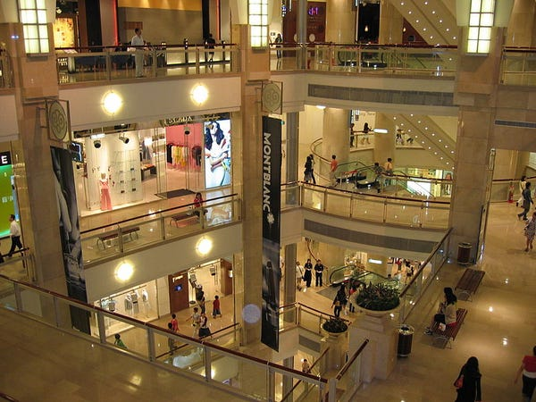

Image of Xinyi District
Economic
With urban growth, the city found that more business was going to be conducted here, and most of the buildings in Taipei were quite old and unfit for the job. Therefore, it adapted by building more high-rise buildings like skyscrapers to accommodate businesses in Taipei and businesses that were moved to Taipei.

Inside of Taipei 101
CBD's and business buildings are an opportunity for people who are looking for a new area for offices or even small businesses. It is also an opportunity for Taipei to grow their economy even further, with new businesses coming to their city. These business buildings are also an opportunity for corporations who own these buildings to get money, such as Taipei Financial Center, who owns Taipei 101, receives income from the businesses that they accommodate.
Throughout Taipei, Xinyi district has had the most business buildings and skyscrapers built there, with a total of 4 buildings over 200 meters in height.
The Taipei Nan Shan Plaza building is the 2nd highest building in Taiwan as well as the 239th highest building in the world with a height of 272 meters (892 feet).
SCROLL